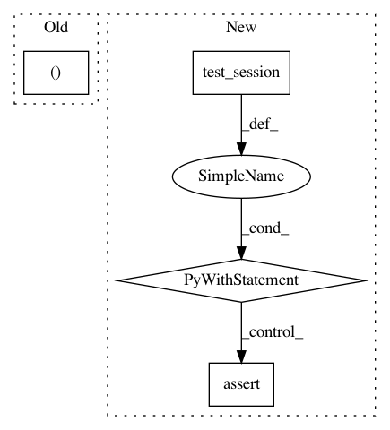

d1d8284dd21afef5f5cc3e0b98f67a9dab4d57cd,tests/test_hypersphere_tensorflow.py,TestHypersphereOnTensorFlow,test_exp_vectorization,#TestHypersphereOnTensorFlow#,171
Before Change
result = self.metric.exp(n_tangent_vecs, one_base_point)
gs.testing.assert_allclose(result.shape, (n_samples, dim))
expected = gs.zeros((n_samples, dim))
for i in range(n_samples):
expected[i] = self.metric.exp(n_tangent_vecs[i], one_base_point)
expected = helper.to_vector(expected)
After Change
n_vecs, base_point=one_base_point)
result = self.metric.exp(n_tangent_vecs, one_base_point)
point_numpy = np.random.uniform(size=(n_samples, dim))
with self.test_session():
self.assertShapeEqual(point_numpy, result)
one_tangent_vec = self.space.projection_to_tangent_space(
one_vec, base_point=n_base_points)
result = self.metric.exp(one_tangent_vec, n_base_points)
point_numpy = np.random.uniform(size=(n_samples, dim))
In pattern: SUPERPATTERN
Frequency: 3
Non-data size: 4
Instances
Project Name: geomstats/geomstats
Commit Name: d1d8284dd21afef5f5cc3e0b98f67a9dab4d57cd
Time: 2018-09-12
Author: ninamio78@gmail.com
File Name: tests/test_hypersphere_tensorflow.py
Class Name: TestHypersphereOnTensorFlow
Method Name: test_exp_vectorization
Project Name: geomstats/geomstats
Commit Name: 26138c45ee77d508abb928e8adc6a77aa2e9d149
Time: 2018-09-14
Author: ninamio78@gmail.com
File Name: tests/test_hypersphere_tensorflow.py
Class Name: TestHypersphereOnTensorFlow
Method Name: test_exp_vectorization
Project Name: geomstats/geomstats
Commit Name: 5f64204ab895dee4c4a706879f89d714237a5057
Time: 2018-09-26
Author: claire.donnat@gmail.com
File Name: tests/test_minkowski_space_tensorflow.py
Class Name: TestMinkowskiSpaceTensorFlow
Method Name: test_inner_product_matrix